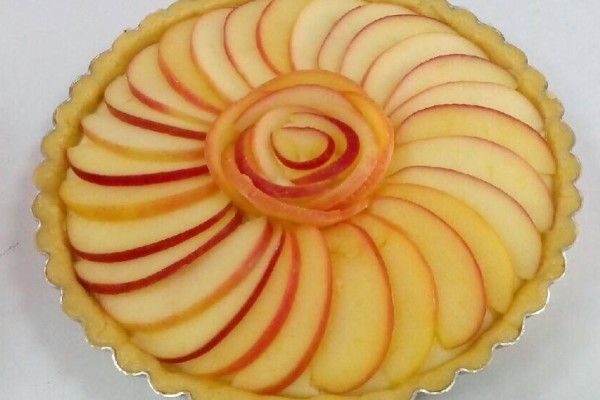

蘋果塔
蘋果肉切丁後加入檸檬汁(A)並以食物調理機攪打成泥狀，倒入厚底鍋中備用
將白砂糖(A)、肉桂粉及玉米粉先行混合均勻後加入蘋果泥中，然後加入無鹽奶油(A)，以中小火一邊滾煮一邊緩慢攪拌，直到蘋果泥在鍋中開始滾煮冒大泡。
[ 做法 ] – 表層蘋果片與最後烘烤
另外準備2大顆蘋果、去皮後切成半月形薄片、浸泡在檸檬汁(B)中備用。蘋果片切得愈薄，最後在表面交疊出來的圖樣排列會更美。
將前面微溫的蘋果泥全數倒入塔皮中至9分滿，表面稍加整平。
之後將蘋果片依照自己喜愛的圖樣層疊交錯排在蘋果泥上。可以是魚鱗片狀或同心圓花瓣狀。
表層均勻刷上一層融化無鹽奶油(B)，然後撒上預拌好的香草糖 (無可省略或改用適量砂糖)。
放入預熱達溫180度 (華氏350度) 烤箱中層，設定烘烤時間為50~55分鐘或當蘋果片邊緣開始出現微焦黃色時出爐。
出爐後需放涼約1~2小時讓塔皮及內餡冷卻、脫模後移放到冰箱冰涼數小時或至隔日，當內餡更為固化時切出來的剖面才會俐落漂亮。

戈登拉姆齊
烤雞腿
番茄蛤蠣義大利麵
心得